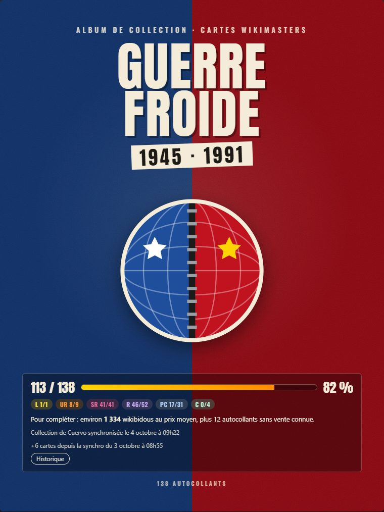
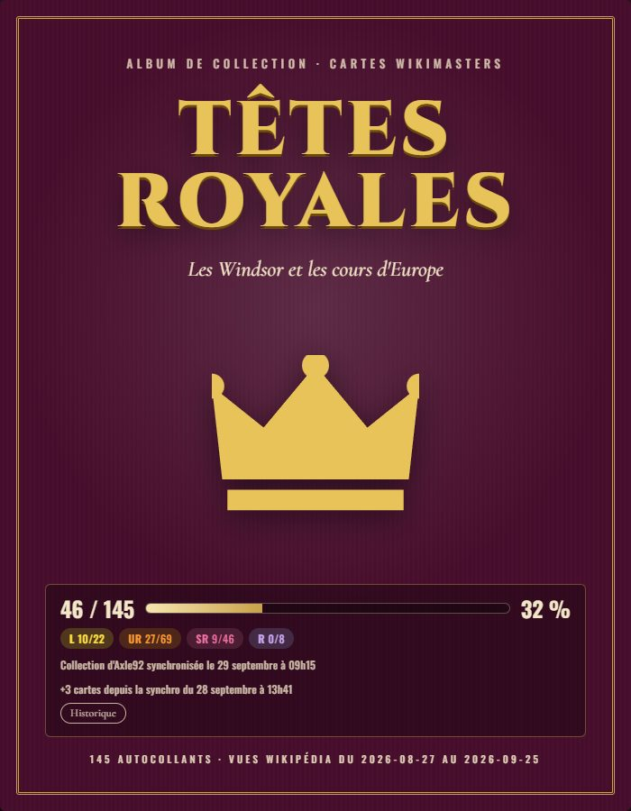
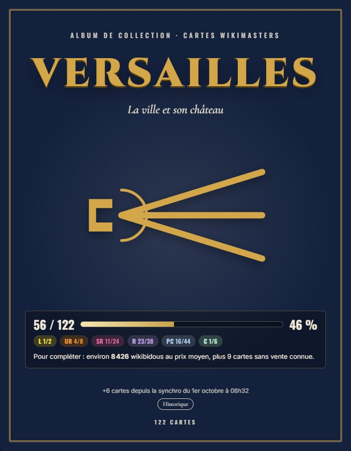
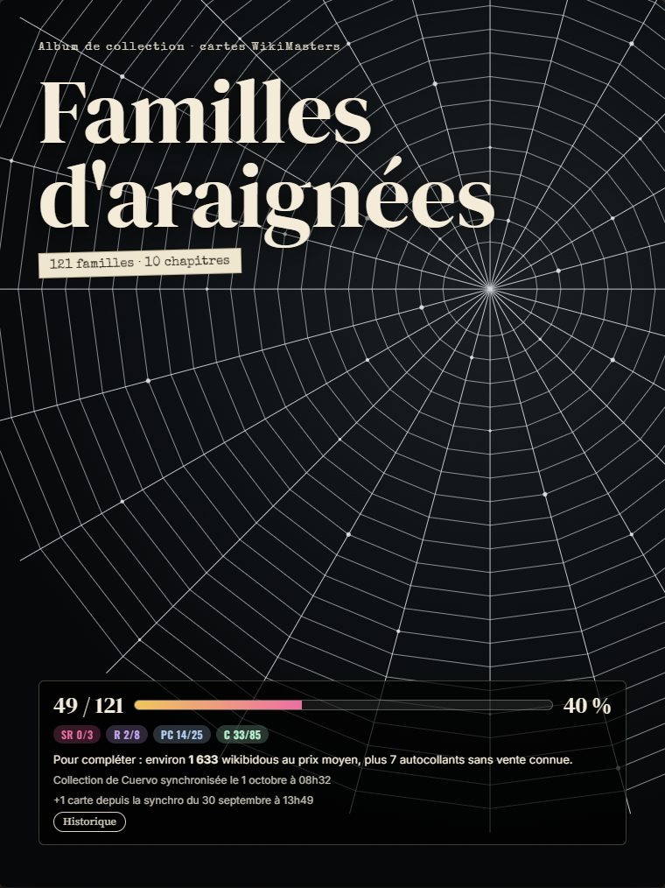
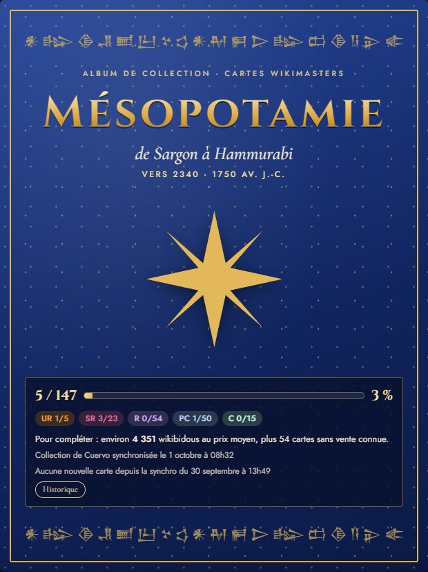
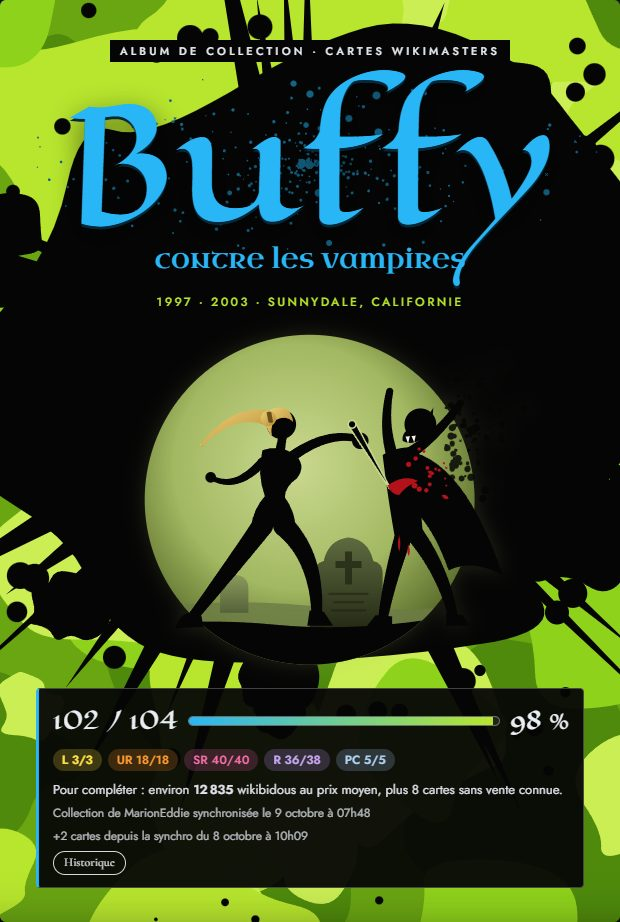
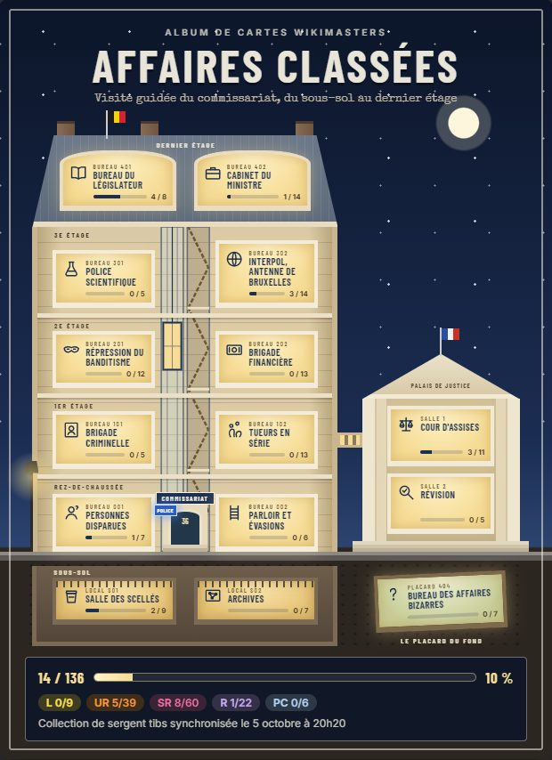

WikiMasters · albums de collection
Choisis ton album
Des albums à remplir pour ranger ses cartes WikiMasters par thème. Survole ou touche une carte pour la voir en grand, clique sur son nom pour lire l'article Wikipédia.

Guerre froideDe Yalta à la chute de l'URSS, une double page par décennie.Pour compléter : environ 5 867 wikibidous au prix moyen, plus 27 cartes sans vente connue.Collection de Cuervo
Têtes royalesLes Windsor en arbre généalogique, l'Europe de la reine Victoria, les maisons, les cours d'aujourd'hui et les couronnes perdues.Pour compléter : environ 24 779 wikibidous au prix moyen, plus 3 cartes sans vente connue.Collection d'Axle92
VersaillesLa ville avant le château : quartiers, lignes de train, lycées, clubs, concerts, puis le voisin royal.Pour compléter : environ 12 963 wikibidous au prix moyen, plus 10 cartes sans vente connue.Collection de ced_visno
Familles d'araignées121 familles en dix chapitres : vedettes, redoutées, camouflage, terriers, fossiles et d'autres.Pour compléter : environ 2 484 wikibidous au prix moyen, plus 10 cartes sans vente connue.Collection de Cuervo
MésopotamieDe Sargon à Hammurabi : cités, rois, dieux et tablettes entre le Tigre et l'Euphrate, avec une frise et une carte.Pour compléter : environ 4 615 wikibidous au prix moyen, plus 54 cartes sans vente connue.Collection de Cuervo
Buffy contre les vampiresSept saisons à Sunnydale : la série, ses acteurs, ses adversaires, Angel, la Trilogie du samedi et les personnages.Pour compléter : environ 12 835 wikibidous au prix moyen, plus 8 cartes sans vente connue.Collection de MarionEddie
Affaires classéesVisite guidée du commissariat, du sous-sol au dernier étage : scellés, évasions, casses, escrocs, procès et scandales.Collection de sergent tibs